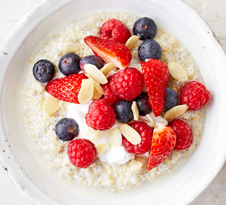
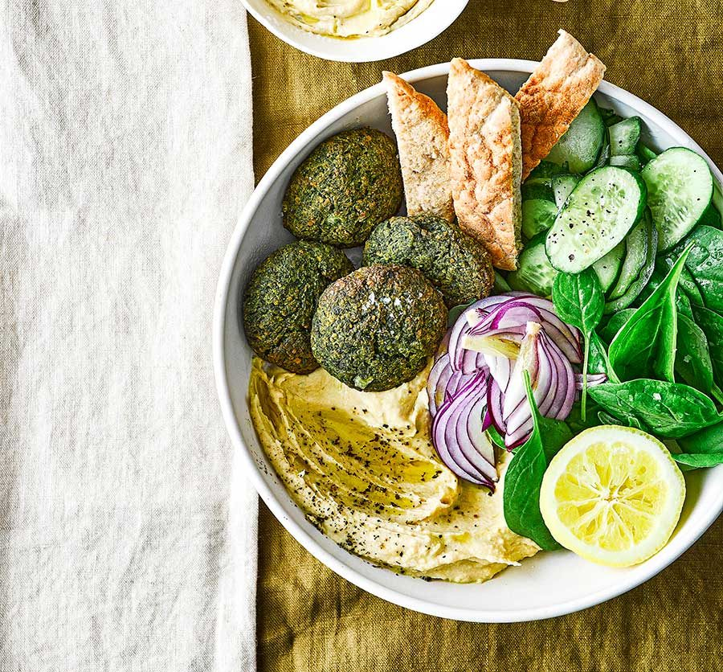
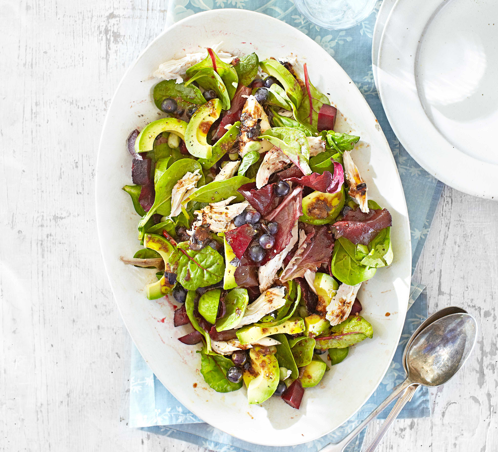

Cajun Salmon with Cauliflower Rice
Want a quick and easy weeknight dinner? I love making this Cajun grilled salmon with tomato cauliflower rice as it’s nutritious, tasty and super speedy. This recipe is paleo, gluten-free, and low-carb

Read More
Want a quick and easy weeknight dinner? I love making this Cajun grilled salmon with tomato cauliflower rice as it’s nutritious, tasty and super speedy. This recipe is paleo, gluten-free, and low-carb
Garlic Butter Chicken Bites Recipe with Asparagus – With so much flavor and so easy to throw together, this chicken and asparagus recipe is a winner for dinnertime! Chicken bites are so juicy, tender, and delicious that you’ll eat them hot right off the pan! This low-carb, keto-friendly one-pan chicken dinner is ready in under 30 minutes. If you’re super hungry, serve the garlic butter chicken bites on top of cauliflower rice, it makes a super healthy dinner idea everyone will love. This chicken recipe is a must for your weekly meal plan. Enjoy!

Make this porridge the night before so you don't miss breakfast. It offers a good dose of omega-3 and can help lower cholesterol as part of a healthy diet
Make this easy vegan salad bowl, with homemade spinach falafels and hummus served alongside pitta and salad. It’s packed with nutrients for a healthy supper
A healthy, gluten-free dinner or lunch, perfect for using up leftover roast chicken. Make it veggie by swapping the meat for a handful of pumpkin seeds.
